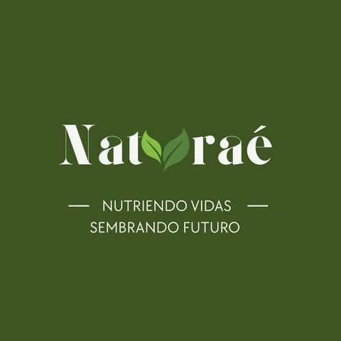
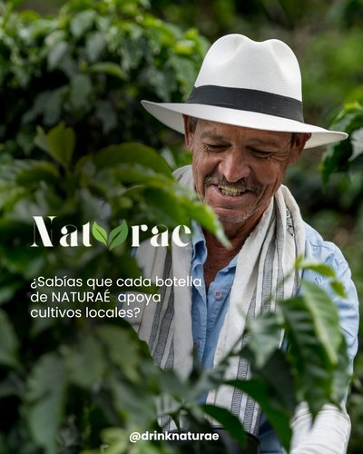
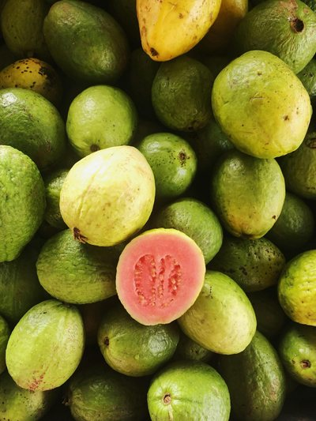
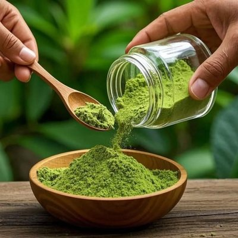
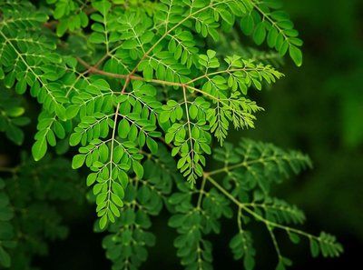
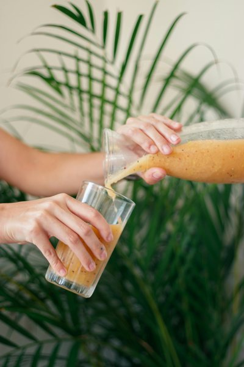
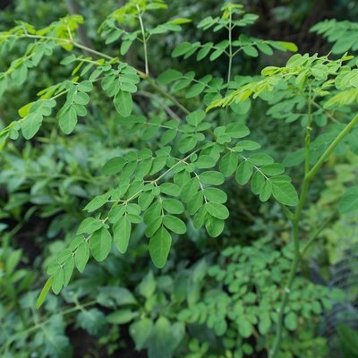

Naturaé Guatemala
Sembrando oportunidades
Jugo de frutas y moringa


Nuestra propuesta de impacto social
Este proyecto va más allá de ofrecer una bebida. Queremos compartir con las comunidades conocimientos sobre el cultivo de la moringa y las frutas que componen el producto, y acompañarlas en ese proceso.
Cultivo y compra local
Nuestra propuesta es comprar los ingredientes a las familias que participen, con el objetivo de abrir oportunidades de generación de ingresos en las comunidades rurales.
Una cadena solidaria
El proyecto plantea donar un jugo a una aldea con alta vulnerabilidad nutricional por cada jugo vendido. Con esta iniciativa buscamos conectar a las personas en torno al bienestar de los guatemaltecos.
Nuestra inspiración natural




